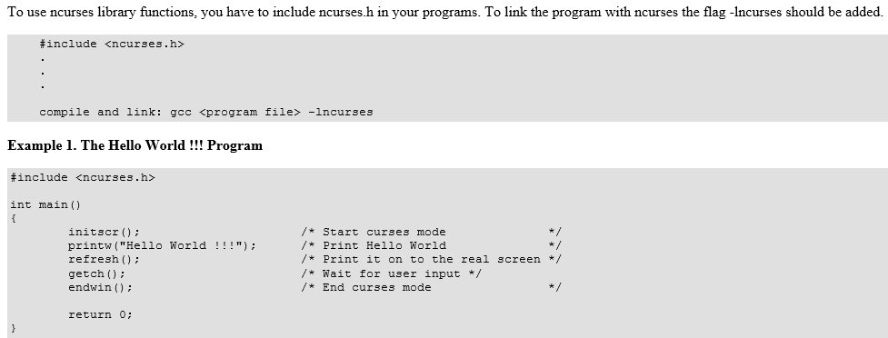
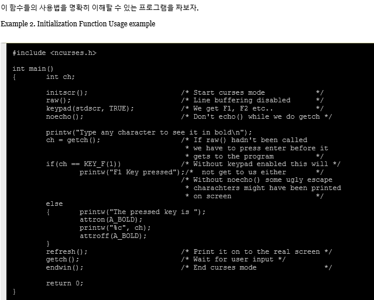

What is NCURSES ?
-
What we can do with NCURSES ?
-
Compiling With the NCURSES Library

-
Initialization functions
- raw() 와 cbreak()
보통 터미널 드라이버는 new line 들어올 때까지 사용자가 입력한 내용을 버퍼링합니다.
그러나 대부분의 프로그램들은 사용자가 타이핑을 하고나서 될 수 있는 한 빨리 그
문자들을 필요로 합니다.
위의 두 함수는 라인 버퍼링을 비활성화 시키는 데 자주 사용됩니다. - echo()와 noecho()
이 함수들은 사용자들이 터미널에 입력한 문자들을 echoing 할 것인지 제어합니다.
echoing 에 대한 더 많은 제어를 하기 위해서나 또는 getch() 등의 함수로 사용자들에게서 입력을
받고 있을 때 불필요한 echoing 을 없애기 위해서 이 함수들이 필요할 것입니다. 대부분의
인터랙티브한 프로그램들은 noecho() 를 초기화때 호출하고 필요할때면 제어를 통해 echoing 을
합니다. 이렇게 하면 프로그래머는 윈도우의 (y,x) 의 위치를 굳이 갱신시키지 않더라도 필요한
위치에 문자들을 echoing 할수 있는 융통성을 가지게 됩니다. - keypad()
이 함수는 F1, F2, 방향키 같은 기능키들을 입력받을 수 있게 합니다. 방향키들은 어떠한 사용자
인터페이스에서도 큰 비중을 차지하듯이, 거의 모든 인터랙티브한 프로그램들은 이 기능들을 필요로 한다. keypad(stdscr, TRUE) 를 호출하는 것은 일반 화면인 (stdscr) 에서 이 기능을 쓰게 합니다.우리 프로젝트에서 필요로 할 것 같은 함수들을 소개했고 아래 그림으로 연습해 보시면 됩니다.

NCURSES 는 원래의 System V Release 4.0(SVr4) curses 의 클론입니다. 그것은 자유롭게 배포될수
있는 라이브러리이며, curses 의 구버전과 완벽히 호환됩니다. 쉽게말해 어플리케이션의 문자표현 -cell terminals 을 다루는 함수들의 라이브러리 입니다. 이제 이후로는 curses 와 NCURSES 는 같은 뜻으로
쓰일 것 입니다.
NCURSES 는 터미널 기능의 wrapper 를 만들어줄 뿐만 아니라 텍스트모드에서 멋진 UI 를 만들수 있는 튼튼한 프레임웍도 제공합니다. 그것은 윈도우등을 만들 수 있는 함수를 제공합니다. 그것의 자매 라이브러리인 패널, 메뉴, 폼등은 기본적인 curses 라이브러리에 확장성을 제공합니다.
이 라이브러리들은 보통 curses 와 같이 설치됩니다. 누구나 다중 윈도우와 메뉴, 패털 그리고
폼을 포함하고 있는 어플리케이션을 작성할 수 있습니다.
NCURSES 는 보통 설치할때 자동으로 깔리기 때문에 우리는 이제 컴파일을 해보겠습니다.
위 프로그램은 화면을 저장하고 컴파일할때는 g++ -o hello hello.cpp -lncurses로 컴파일을 합니다. 여기서 프로젝트를 직접 진행하면서 얻은 팁은 나중에 되면 파일 갯수가 늘어나게 되므로 컴파일할때도 명령어가 길어지게 되므로 makefile을 만들면 make 만 입력하게되면 컴파일을 손쉽게 할수 있습니다. makefile은 다음 장에서 소개하겠습니다.
수업시간에 알려주신 함수 이외에 몇가지 함수를 소개하겠습니다.